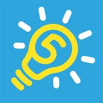
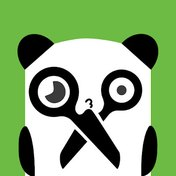
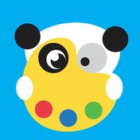
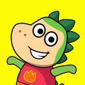
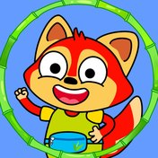
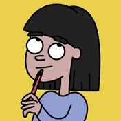

$4M+revenue in a single peak month — TheSoul’s international unit, built from nothing


Bright Side · 5-Minute Crafts · Crafty Panda- 20M+followers across 4 markets in 18 months — Spanish, English, Portuguese, French, first mover, no playbook
- $420Kinvestment secured through business planning, pitch deck and investor relations
- ~$2.5Ma year — the independent P&L owned at Bored Panda, 80–100 people
- $80–150Kmonthly operating budgets managed across production, talent and marketing
- $50K+monthly paid media run by the international unit on Meta and Google
- 100+person multinational remote team built from zero — flew to São Paulo to hire it
- $250Krevenue in the first five months of one Spanish-language channel
- 16channels in the portfolio behind the Studio71 deal
Forbes Russia credits him by name with becoming CEO of four international projects.
120B+cross-platform views across the networks built and directed



Gotcha! · Kaboom! · Crafty Panda · Bright Side · Little Panda- 50+YouTube Play Buttons across the networks built
- #1worldwide in its category — Gotcha!, a network of 57 channels in 15 languages
- #1worldwide on Facebook by monthly video views — Crafty Panda, 2.1B in one month
- 1 → 50+channels at Bored Panda, plus 70+ social pages, in 15+ languages
- 9.6Mfollowers on Trucos Panda, launched by him — and 5.7M on Panda Curioso
- 84M+subscribers combined across the four markets opened at TheSoul
- 2B+cumulative views across the Bored Panda portfolio
B2B — when the channel has to produce pipeline, not subscribers
- 631Kmonthly views — a major hosting brand turned from −25% YoY with a 3-pillar system and a 127-video plan
- $380Kpipeline and 85 qualified demos a month — a B2B SaaS, 1.2K to 12K subscribers
- $216Kin retainers and a four-month waitlist — a fractional CFO who had 870 subscribers
- $2.1Mclosed from YouTube by a Miami agent who cut Zillow spend to zero
Netflix“Fire Spike: Season 1” premiered worldwide in October 2026 — the character was born on the channel he built



Fire Spike · Bamboo! · Dear Diary · Kaboom!- 13K → 1.14Msubscribers on Fire Spike after his departure, on the system he built — Gold Play Button, 610M views, 100% organic
- 0 → 340Ksubscribers in seven months on Bamboo!, 538M views, 654 videos — built from concept for a client
- 3animated IPs directed in house: Fire Spike, Bamboo! and Dear Diary
- 5language versions of Dear Diary; its Spanish Facebook page reached 12M
- 1+ yearsustained after rescuing a failing animation project and restructuring it into three languages
- AwardPrêmio Influenciadores Digitais 2016 — Incrível Club, Behaviour & Lifestyle, by popular vote
Every format was designed to be localised, not dubbed — which is why they travelled.
$80K → $25Ka month. A 70% operating cost cut in 2022 — a year before ChatGPT was public
Unscripted World · Bamboo!
- 60%+production costs cut again at Hype On Media, with AI across the full lifecycle
- 10+digital content ventures developed across animation, documentary, education and lifestyle
- 50+channels tracked by self-built KPI dashboards on CTR, retention and revenue
- End to endAI applied across strategy, operations and marketing — not a pilot, a restructuring
The strategy stays his. The system carries the volume. One human checkpoint stays in.